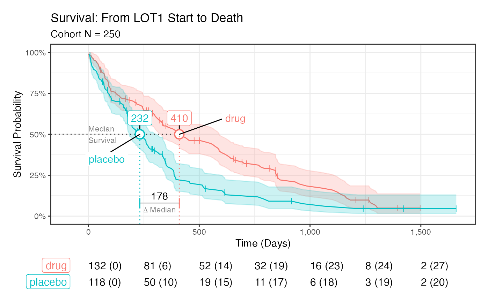
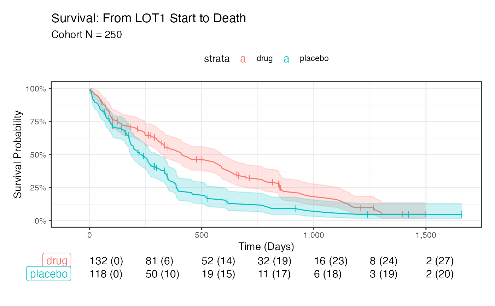
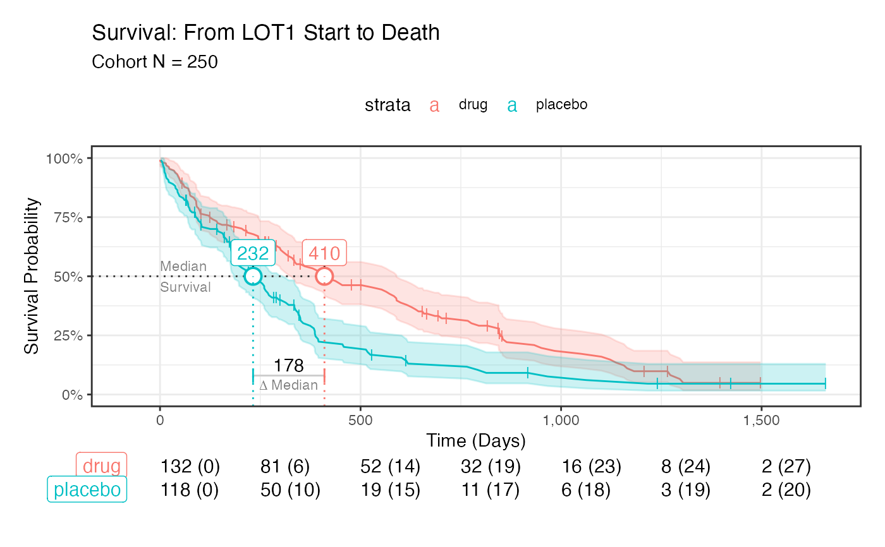
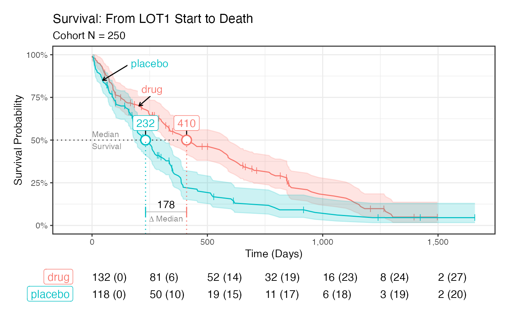

plot_survival.RdPlot the results of a survival analysis
plot_survival( object = NULL, cohort = NULL, ggtheme = ggplot2::theme_bw(), palette = "Set1", simple = FALSE, add_gridlines = TRUE, add_confidence = TRUE, add_labels = TRUE, add_median = TRUE, add_median_delta = TRUE, anchor_arrow = FALSE, legend_position = "inside", legend_anchor_y = 0.5, legend_nudge_y = NULL, legend_position_x = NULL, xlim = NULL, x_breaks = NULL, label_size = 3, label_color = gray(0), median_flag_nudge_y = 0.1, median_flag_thickness = 0.7, risk_table = TRUE, risk_size = 3.5, risk_label_size = 1.25, index_title = NULL, event_title = NULL, median_flag_size = 4, event_nudge_y = 0.15, panel_heights = c(3, 1) )
| object | iwillsurvive. An iwillsurvive object created from iwillsurvive |
|---|---|
| cohort | dataframe. A one-row-per-patient cohort used in generating fit. |
| ggtheme | theme. A ggplot2 theme |
| palette | character. The name of a paleete. See ?ggplot2::scale_colour_brewer for examples |
| simple | logical. If TRUE, only plot the Kaplan-Meier estimate |
| add_gridlines | logical. If TRUE, include gridlines |
| add_confidence | logical. If TRUE, include a confidence interval |
| add_labels | logical. If TRUE, show verbal labels |
| add_median | logical. If TRUE, show median survival |
| add_median_delta | logical. |
| anchor_arrow | logical. If TRUE, use an arrow in pointing to the anchor |
| legend_position | character. Where should the strata labels be located? Either 'inside' for inside the plot, or 'top', or 'right' |
| legend_anchor_y | numeric. Y locations of anchors for legends. Only used if legend_position = "inside" |
| legend_nudge_y | numeric. |
| legend_position_x | numeric. X position of the legend(s) |
| xlim | numeric. |
| x_breaks | numeric. Major breaks for the x-axis |
| label_size | numeric. Size of the labels. |
| label_color | character. Color of labels. |
| median_flag_nudge_y | numeric. Amount to nudge median label. |
| median_flag_thickness | numeric. Thickness of the flag border |
| risk_table | logical. If TRUE, include the risk table |
| risk_size | numeric. Size of font in risk table. |
| risk_label_size | numeric. Size of labels in risk table |
| index_title | character. |
| event_title | character. |
| median_flag_size | numeric. |
| event_nudge_y | numeric. |
| panel_heights | numeric. Heights of the KM and Risk panels |
ggplot2
# Set things up by creating an iwillsurvive object cohort <- ez_cohort %>% derive_followup_date( event_date = "dateofdeath", censor_date = "lastvisitdate" ) %>% derive_followup_time(index_date = "lotstartdate") %>% derive_event_status(event_date = "dateofdeath") cohort_iws <- iwillsurvive(cohort, followup_time = "followup_days", terms = "condition", event_title = "Death", index_title = "LOT1 Start" )#>#>#>plot_survival(cohort_iws)#> Warning: is.na() applied to non-(list or vector) of type 'expression'# Set simple = TRUE to only get the KM without any fancy pants stuff plot_survival(cohort_iws, simple = TRUE )# Control the location of the legend with legend_position plot_survival(cohort_iws, legend_position = "top" )#> Warning: is.na() applied to non-(list or vector) of type 'expression'# Change the location of the labels and add arrows plot_survival(cohort_iws, legend_anchor_y = c(.7, .85), legend_position_x = c(260, 250), legend_nudge_y = .1, anchor_arrow = TRUE )#> Warning: is.na() applied to non-(list or vector) of type 'expression'